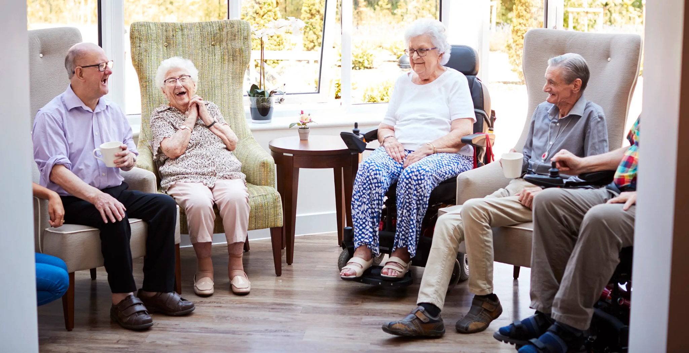
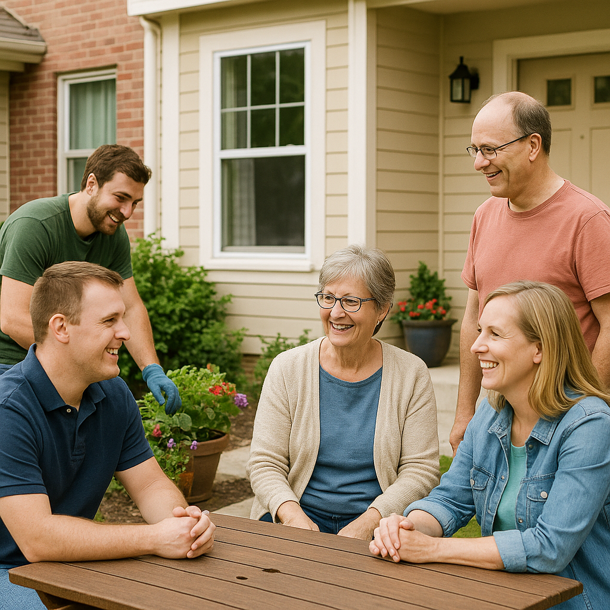
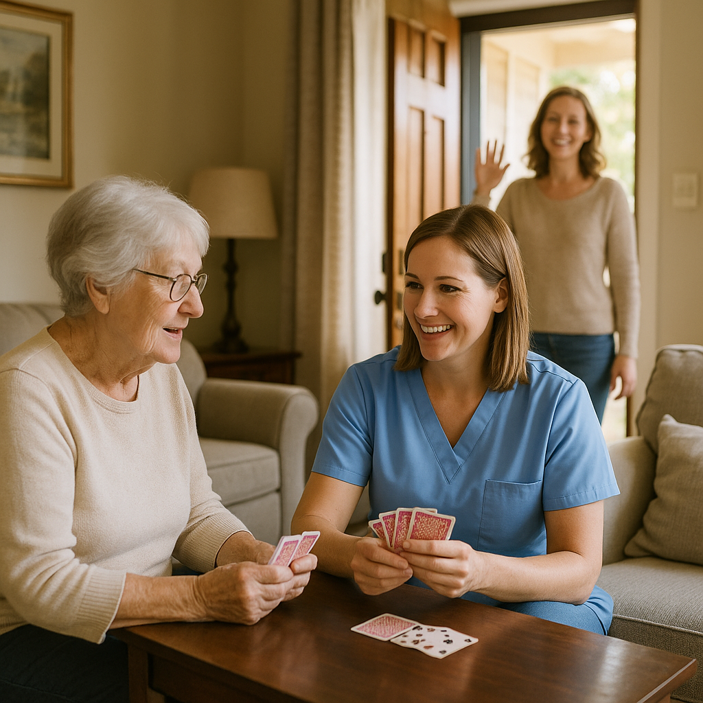
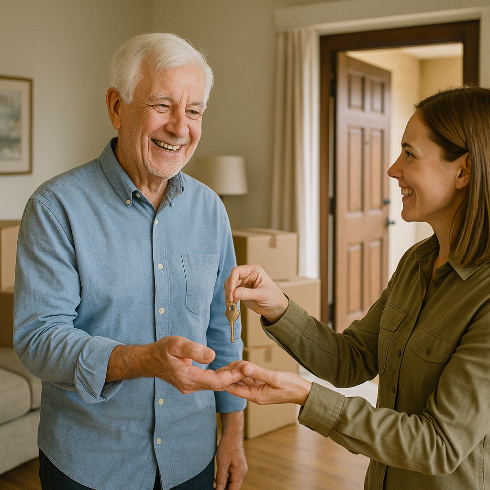
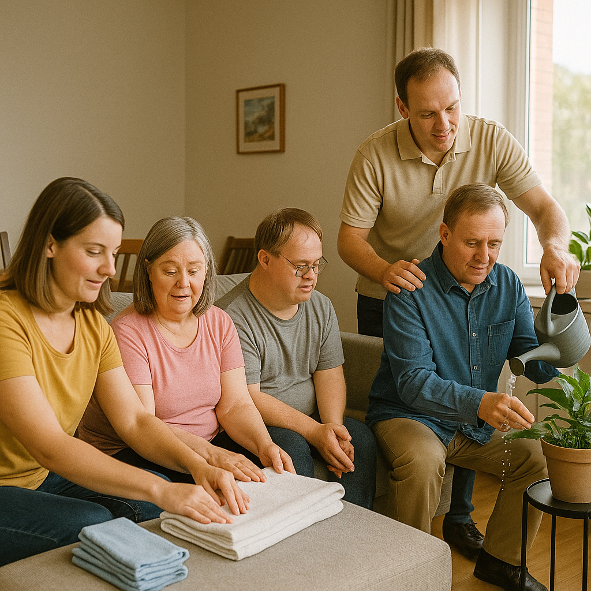

Attendant Care Services
One‑on‑one assistance with daily living activities, delivered with utmost respect and professionalism.
- Personal hygiene assistance
- Meal preparation and feeding
- Mobility assistance
- Medication reminders
- Light housekeeping

Adult Family Care
Comfortable home‑like settings for personalized supervision and nurturing companionship.
- Assistance with daily living
- Medication management
- Socialization & companionship
- Light housework
- Emotional well‑being support
Residential-Based Habilitation
Structured programs to develop personal skills and foster community integration.
- Personal skills training
- Community integration activities
- Budget & meal planning support
- Health monitoring
- Social skills development
Structured Family Caregiving
Resources and compensation for families providing dedicated home care.
- Family caregiver training
- Supervision & monitoring
- Support from our care team
- Respite care options
- Financial compensation
Non-Medical Transportation
Safe, reliable rides for appointments, errands, and outings.
- Medical appointment transport
- Social & recreational outings
- Grocery & errand assistance
- Door‑to‑door service

Community Integration & Habilitation (CIH)
Expanding independence through life skills training and community engagement.
- Public transportation navigation
- Social & volunteer opportunities
- Daily living skill development
- Community resource utilization
Family Supports Waiver (PAC)
Essential in-home assistance for daily living activities.
- Personal hygiene assistance
- Mobility support
- Meal preparation
- Medication management
Day Habilitation
Structured programs for personal development and socialization.
- Arts & crafts activities
- Life skills training
- Community outings
- Socialization opportunities

Respite Care Services
Short-term relief for families and caregivers.
- Temporary care solutions
- Nurturing environment
- Flexible scheduling
- Experienced respite staff

Money Follows the Person (MFP)
Smooth transition to community-based living.
- Institutional care transition
- Independent living support
- Community integration
- Long-term stability planning

Residential Habilitation & Support
24/7 support for independent living.
- Group home services
- Autonomy-focused care
- Community participation
- Daily living assistance